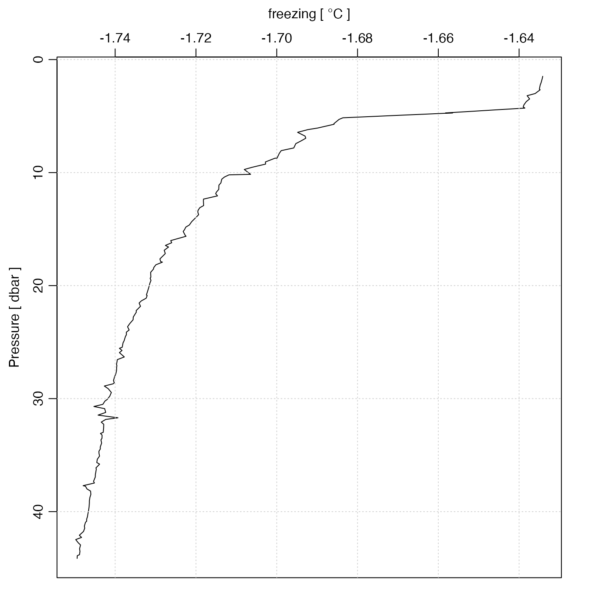

Create a copy of an object in which some element of its
data slot has been altered, or added.
Arguments
- object
an oce object.
- name
the name of the
dataitem to be set.- value
value for the item.
- unit
an optional indication of the units for the item. This has three possible forms (see “Details”).
- originalName
character string giving an 'original' name (e.g. as stored in the header of a data file). The default,
"-", is taken bysummary()functions to mean that there was no original name inobject.- note
either empty (the default), a character string, or
NULL, to control additions made to the processing log of the return value. Ifnote=""then the an entry is created based on deparsing the function call. Ifnoteis a non-empty string, then that string gets added added to the processing log. Finally, ifnote=NULL, then nothing is added to the processing log. This last form is useful in cases whereoceSetDatais to be called many times in succession, resulting in an overly verbose processing log; in such cases, it might help to add a note by e.g.processingLog(a) <- "QC (memo dek-2018-01/31)"
Value
oceSetData returns an oce object, the data slot of which
has been altered either by adding a new item or modifying an existing item.
Details
The trickiest argument to set is the unit. There are three
possibilities for this:
unitis a named or unnamedlist()that contains two items. If the list is named, the names must beunitandscale. If the list is unnamed, the stated names are assigned to the items, in the stated order. Either way, theunititem must be anexpression()that specifies the unit, and thescaleitem must be a string that describes the scale. For example, modern temperatures haveunit=list(unit=expression(degree*C), scale="ITS-90").unitis anexpression()giving the unit as above. In this case, the scale will be set to"".unitis a character string that is converted into an expression with parse(text=unit), and the scale set to"".
See also
Other things related to the data slot:
oceDeleteData(),
oceGetData(),
oceRenameData()
Examples
data(ctd)
Tf <- swTFreeze(ctd)
ctd <- oceSetData(ctd, "freezing", Tf,
unit = list(unit = expression(degree * C), scale = "ITS-90")
)
plotProfile(ctd, "freezing")
